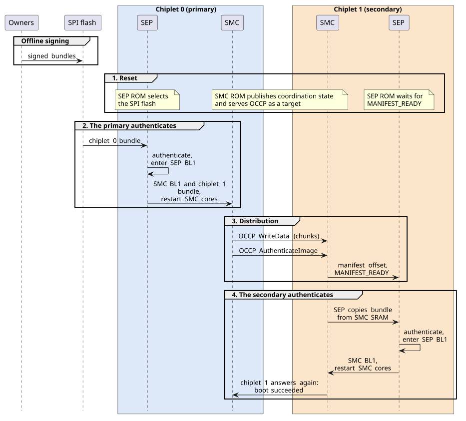
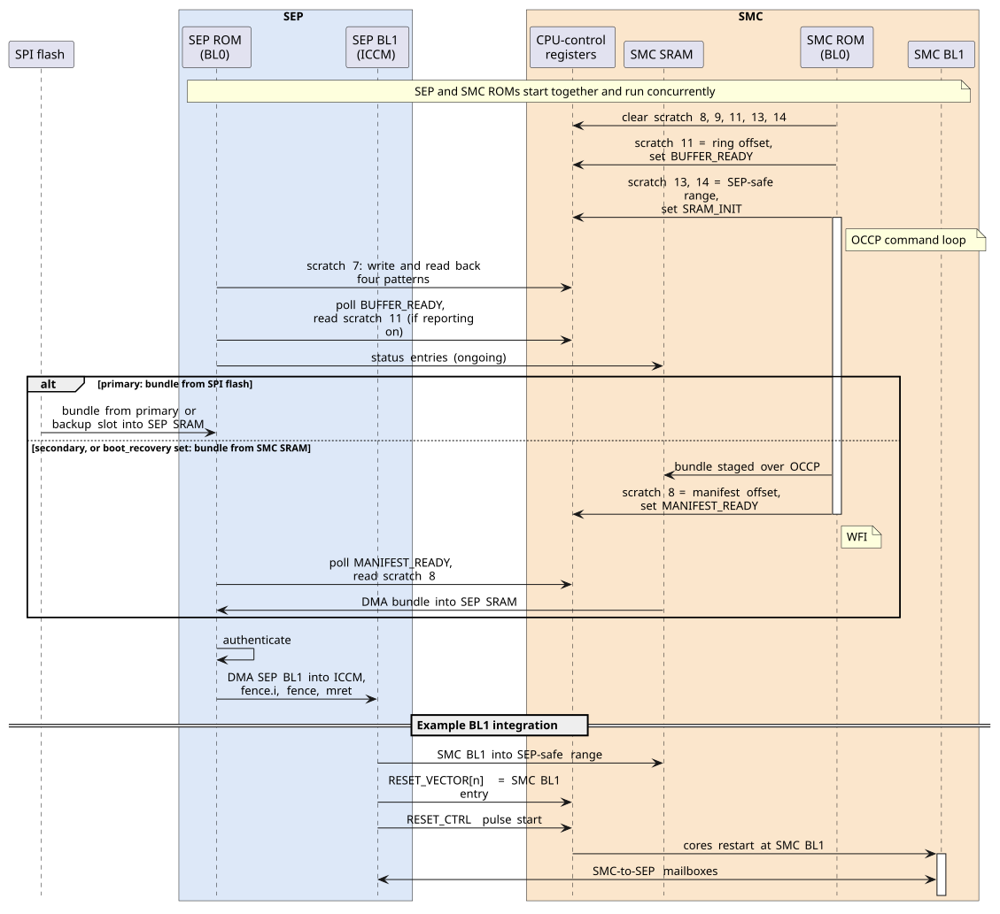
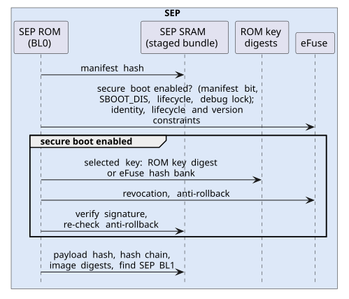
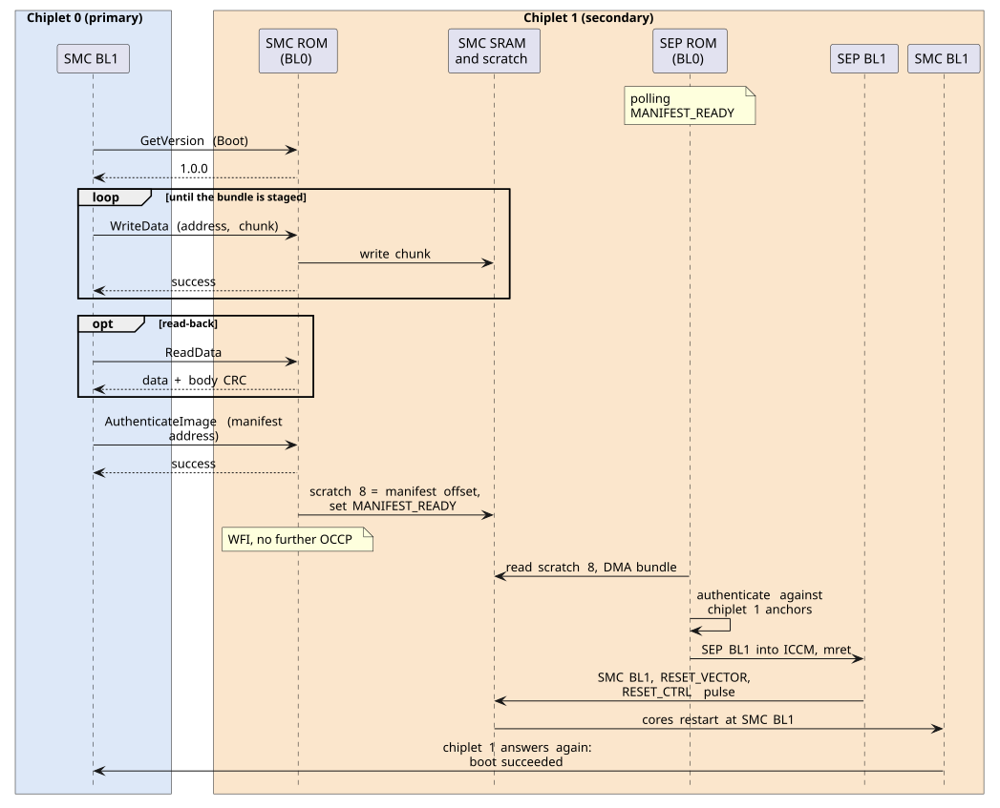

System-in-Package Secure Boot
1. Introduction
This note follows the secure boot of an OCA-based System-in-Package (SiP) whose chiplets integrate OCAH, using a package of two chiplets as the example. Each chiplet’s Security Processor (SEP) and System Management Controller (SMC) boot from their own ROMs (BL0), then run their first authenticated mutable stage (BL1). The flow covers both stages: SEP BL1 starts SMC BL1 on its own chiplet, and the primary’s SMC BL1 delivers the secondaries' firmware. It ends when SMC BL1 runs on every chiplet.
Chiplet 0 is the primary: its primary_chiplet strap is set, and its SEP
loads firmware from the SPI boot flash attached to it. Chiplet 1 is a
secondary: its primary_chiplet strap is clear, so its SEP reads no boot
flash and instead receives its firmware from chiplet 0, through its own SMC.
A package with more secondaries repeats the chiplet 1 steps for each of them. Nothing in the ROMs orders those repetitions. Each secondary has its own coordination state, so the distributor can serve the secondaries one after another or interleave them, and each one authenticates as soon as its own bundle is handed over.
A chiplet that takes part in this flow carries the two subsystems that boot relies on:
-
The SEP is the chiplet’s root of trust. It decides whether firmware may run on that chiplet, against trust anchors in that chiplet’s own ROM and eFuses.
-
The SMC is the chiplet’s management endpoint. Its role in authentication is limited and non-cryptographic: it holds a staged bundle in its SRAM and tells the SEP, through a scratch register, where the bundle is, but the SEP authenticates the bundle without relying on any check the SMC makes. Agents outside the chiplet reach it over the Open Chiplet Configuration Protocol (OCCP), a request-response protocol carried on its I3C and I2C interfaces. That is how a secondary’s bundle arrives: the distributing agent writes it into SMC SRAM over OCCP. Once running mutable firmware, the SMC can deliver firmware to other chiplets.
The split is what lets firmware travel across an ordinary management bus. The primary can decide what to deliver and when, but it cannot make the delivered firmware authentic; when secure boot is enabled, the receiving SEP accepts only what verifies against its own trust anchors. Neither the bus nor the primary chiplet is inside the secondary’s trust boundary.
A non-primary chiplet may also be built without a SEP; the Non-Primary Chiplets section of the Technical Reference Manual (TRM) describes how the primary’s SiP-owner debug controls then govern it. Such a chiplet has nothing in OCAH that can authenticate the firmware it receives. This note covers chiplets that have a SEP.
1.1. Boot stages
The SEP and the SMC each run their own BL0 and then BL1. The two BL0 stages start together at reset, and SEP BL1 is what starts SMC BL1:
| Stage | SEP | SMC |
|---|---|---|
BL0 |
Runs from the SEP ROM. Copies a bundle, from the SPI flash or from its own SMC’s SRAM as the straps select, into SEP SRAM. Authenticates it, copies SEP BL1 to its load address (in this example the SEP’s instruction closely coupled memory, ICCM) and jumps to it. |
Runs from the SMC ROM. Publishes the SEP coordination state, then serves OCCP
requests as a target. Accepts a bundle into SMC SRAM and, on
|
BL1 |
Runs from SEP ICCM. Places SMC BL1 in SMC SRAM and restarts the SMC cores into it. |
Runs from SMC SRAM, started by SEP BL1. On the primary, drives the package management bus as a controller and distributes the secondary’s bundle. |
SEP BL0 and SMC BL0 are the OCAH boot ROMs; the SEP Boot ROM and SMC Boot ROM appendices of the Programmer’s Guide cover the details this note summarizes. The SEP BL1 and SMC BL1 steps in this note are an example integration, built on the interfaces the ROMs and the hardware provide; a BL1 implementation can divide the work differently.
1.2. Bundles and signatures
Firmware moves as a bundle: an OCA manifest followed by a payload. The manifest is a 4096-byte header that carries the usage constraints, any debug demotion request, the signer’s public key, the key-slot selection, the signature, and the payload digest. The payload is a table of contents (TOC) followed by image data. Each TOC entry gives an image’s type, offset, length, load address, entry point, digest and target chiplet ID.
A chain of checks links the manifest’s signatures to each image:
-
The manifest hash, a digest of the manifest’s signed region, checks the manifest’s integrity.
-
The manifest’s signatures cover the same region. They authenticate the manifest and every field in it, including the payload digests.
-
The manifest’s payload hash and payload hash chain link the manifest to the TOC. For a cleartext payload, the payload hash covers the TOC; for an encrypted payload, it covers the whole stored ciphertext and is checked before decryption. The hash chain covers the plaintext TOC and every image, in TOC order.
-
Each TOC entry’s digest checks its image before the image is loaded or handed off.
Only the signature checks depend on secure boot; the other checks run on every boot.
In this example the two bundles are nested:
Chiplet 0 bundle (in one SPI flash slot)
manifest chiplet 0 signers, chiplet 0 ID constraint
payload
SEP BL1 chiplet 0 SEP firmware, type "OCAHSEP BLSTAGE1"
SMC BL1 chiplet 0 SMC firmware
chiplet 1 bundle opaque image, target chiplet 1
manifest chiplet 1 signers, chiplet 1 ID constraint
payload
SEP BL1 chiplet 1 SEP firmware, type "OCAHSEP BLSTAGE1"
SMC BL1 chiplet 1 SMC firmware
SEP BL0 finds SEP BL1 by its TOC type, OCAHSEP BLSTAGE1, and checks that its
load address lies in ICCM or SEP SRAM. The SMC BL1 entry’s type and load address
matter only to SEP BL1.
Through that chain, SEP BL0 on chiplet 0 checks the digest of every image in the outer payload, so the chiplet 1 bundle is covered by chiplet 0’s signature when it leaves SEP BL0. That check protects neither the later copies nor the bus transfer, and it gives the inner bundle no standing on chiplet 1, whose SEP verifies it again against its own trust anchors. The ROM does not use the TOC’s target chiplet ID; binding a bundle to a chiplet is the job of the manifest’s identity constraints (Section 3.5).
SEP BL0 stages the complete bundle in SEP SRAM, and reads a bundle from flash out of one slot, so the outer bundle has to fit in both. Both sizes are configurable; by default SEP SRAM is 256 KiB, and a slot leaves 252 KiB from its manifest to the next slot. Loading bundles into SMC SRAM, which is larger, is a planned alternative to SEP SRAM. A design that outgrows these limits can also keep the secondary bundles in separate flash regions and have SEP BL1 read them after handoff.
Bundles are signed offline, before they are written to flash, by the owners of
the chiplet each bundle is for. The signature travels in the manifest with the
signer’s public key. A chiplet stores only digests of the root public keys it
trusts, its trust anchors, and each anchor belongs to one owner role. Each
anchor occupies one of the chiplet’s root-key slots, a single numbering that
the SEP ROM defines over its own digest table and the eFuse hash banks. A
manifest names the key its signature was made with by setting that slot’s bit in
public_key_select_classic, and the slot’s bit in CHIPLET_PUBK_REVOKE revokes
the anchor. The slot numbers are shown in parentheses:
| Owner | Classical anchors | Post-quantum anchors (deferred) |
|---|---|---|
Chiplet creator |
ROM keys, digests embedded in the SEP ROM image (0-5). |
ROM keys (8-13). |
SiP owner |
|
|
System owner |
|
|
The two SiP slots let one SiP root remain usable after the other is revoked.
OCAH assigns no purpose to individual ROM keys. Which of them an integrator
keeps for development, and revokes in production through CHIPLET_PUBK_REVOKE,
is that integrator’s security policy.
The current SEP ROM verifies one classical RSA-3072 signature, made with the key of the one slot the manifest selects. Any owner’s anchor can authorize a bundle on its own.
The eFuse map also reserves fields for a multi-owner signing model, which the
current SEP ROM does not implement: BL0 does not read REQUIRED_SIGNERS or
REQUIRED_ALGS, and does not verify a manifest’s verifier-key and co-signer
entries. In that model, each chiplet’s REQUIRED_SIGNERS eFuse field sets which
owners must sign the bundles its SEP ROM verifies:
-
the chiplet creator always signs;
-
the SiP owner also signs when
REQUIRED_SIGNERS[0]is burned; and -
the system owner also signs when
REQUIRED_SIGNERS[1]is burned.
Burning a bit adds a requirement; leaving it clear does not require that
owner’s key to be provisioned. REQUIRED_ALGS then selects, per required owner,
a classical signature (ECDSA P-384 or RSA), a post-quantum one (ML-DSA), or
both, and post-quantum signing arrives with the same model. For each required
owner, the manifest must carry a valid signature for every selected algorithm,
made with a provisioned, non-revoked key; when both are selected, neither
signature alone suffices. Signatures from owners outside the required set are
ignored. Firmware performs these checks; the lifecycle controller does not
inspect manifests or signatures.
The fuse fields set only the initial requirement. At cold reset they reload a shadow policy for BL1, and in the model each authenticated stage may change the shadow signer set for the next manifest, adding or dropping owners. Firmware enforces this propagation; there is no hardware signer-policy gate. For example:
-
With no signer bits burned, BL1 requires the chiplet creator only.
-
With the SiP bit burned, BL1 requires the chiplet creator and the SiP owner, and an authenticated BL1 may hand off to a BL2 policy requiring only the SiP owner.
-
An authenticated stage can add the system owner to the shadow policy for its successor, alone or alongside the SiP owner.
The next cold reset restores the fused requirement.
Demotion authorization in the model follows the manifest’s required-signer set and is not tied to a particular boot stage. Both demotions use the same signing rules; the inter-chiplet effect of the second demotion adds no hardware signer check. A SiP owner can require its signature for the initial manifest and commit a non-demoted decision with the demotion lock.
The owners need not be the same parties on each chiplet, and chiplets need not share any anchors. Each chiplet’s creator fixes its ROM keys, and each chiplet’s eFuses hold the keys of that chiplet’s own owners. Chiplet 0’s and chiplet 1’s bundles can therefore be signed by different parties, with different keys. Chiplet 0’s signers package the chiplet 1 bundle as it was signed, and chiplet 0 delivers it without needing to be able to verify chiplet 1’s signature.
Every boot checks the bundle’s integrity: the manifest hash, the manifest’s
identity, lifecycle and version constraints, the payload hash and hash chain,
and each image’s digest. When secure boot is enabled, SEP BL0 also authenticates
the bundle. It rejects the bundle if the presented key’s SHA-256 modulus digest
does not match the selected anchor, if the anchor is an unprogrammed eFuse bank,
or if the anchor’s slot bit is set in the union of CHIPLET_PUBK_REVOKE and the
manifest’s revocation bitmap. It then checks the anti-rollback posture and
verifies the signature.
SEP BL0 decides whether secure boot is enabled separately for each manifest:
-
If the manifest sets its signed
secure_boot_controlenable bit, secure boot is enabled, in every lifecycle state, even whenSBOOT_DISis set. -
If the bit is clear and the
SBOOT_DISfuse is burned, secure boot is disabled. -
If the bit is clear and
SBOOT_DISis not burned, the lifecycle state decides:-
in
PRODandPROD_END, secure boot is enabled -
in
TEST_DEV,RMA_SIPandRMA_CHIPLETit is not enabled-
if chiplet-scope debug is disabled via fuses, secure boot is enabled for
TEST_DEVandRMA_SIP.RMA_CHIPLETis not affected
-
-
The fuses disable chiplet-scope debug when CHIPLET_DBG is set in SIP_DIS or
SYS_DIS, or when either vector is read-locked.
SBOOT_DIS therefore removes the device’s own requirement for verified
firmware, so that unsigned firmware can boot even on a PROD part, but it never
lets a manifest that requests verification skip it. When secure boot is disabled
for a manifest, the manifest gets only the integrity checks, and one that
declares an encrypted payload is rejected, since decryption is available only
under secure boot. The
Secure Boot Decision
section of the SEP Boot ROM appendix in the Programmer’s Guide specifies this
decision as requirements.
A manifest can also request a debug demotion: opening debug access for the
current boot without changing the lifecycle state. The lifecycle controller has
two demotion registers, one for the chiplet’s local debug (DEMOTE_1) and one
for inter-chiplet debug (DEMOTE_2). Each register is fixed once locked, and a
cold reset clears both. SEP BL0 honours the request only from a manifest that
validated, and never demotes in PROD_END. It applies the local demotion
itself; the inter-chiplet one is left to SEP BL1. The TRM describes demotion in
its In-Field Debug Demotion section.
1.3. Flow overview
Figure 1 shows the flow at package level. Arrows show the direction data moves; in this diagram, every access between a SEP and its SMC is initiated by the SEP. Neither SMC ROM ever acts as an OCCP controller; in this flow, the primary’s SMC BL1 does, once SEP BL1 has started it.

The bundles are signed offline and written to the primary’s flash before the package boots. The boot itself has four phases, which Figure 1 frames and numbers:
-
Reset. On every chiplet the SMC ROM publishes its coordination state for its own SEP, in its scratch registers and SMC SRAM (Section 2.2), and starts serving OCCP as a target on its I3C and I2C interfaces (Section 3.1). The primary’s SEP ROM selects the SPI flash. The secondary’s SEP ROM polls for a staged manifest.
-
The primary authenticates. SEP BL0 on chiplet 0 copies its bundle from the SPI flash into SEP SRAM, authenticates it (Figure 3), and enters SEP BL1. SEP BL1 restarts chiplet 0’s SMC into SMC BL1 (Section 2).
-
Distribution. SMC BL1 on chiplet 0 stages the chiplet 1 bundle in chiplet 1’s SMC SRAM over OCCP and hands it over (Section 3).
-
The secondary authenticates. SEP BL0 on chiplet 1 copies the bundle from its SMC’s SRAM into SEP SRAM, checks it against chiplet 1’s trust anchors (Figure 3), and enters SEP BL1. SEP BL1 restarts chiplet 1’s SMC into its own SMC BL1.
The primary’s boot_recovery strap gives a variant of the same flow. With it
set, the primary’s SEP ignores the flash and waits for a staged manifest exactly
as a secondary does. A board management controller or a host then plays the
distributing role over OCCP.
2. SEP-to-SMC coordination interfaces
On each chiplet, the SEP and the SMC depend on each other at three points during boot:
-
During BL0, the SEP needs state that only the SMC can provide; the two ROMs exchange it through the BL0 handshake.
-
At the move to BL1, the SMC needs the SEP. The SMC ROM cannot authenticate firmware, so SEP BL1 places SMC BL1, from the bundle SEP BL0 authenticated, in SMC SRAM and restarts the SMC into it.
-
Once both BL1 stages run, they talk through the SMC-to-SEP mailboxes.
Throughout boot, the SEP leads: during BL0 it initiates every access across the link between them, and in this flow it decides what the SMC runs. The interfaces are the same on every chiplet.
The handshake exists because the two ROMs boot in parallel and neither can assume how far the other has got. The SEP ROM needs two things from the SMC: where in SMC SRAM its status ring is and, on a secondary, where the staged bundle is and when it is complete. The SMC publishes each item in its CPU-control scratch registers or in SMC SRAM, then sets a flag. The SEP first checks that it can reach the SMC at all, then polls each flag before it reads the item; no interrupt is involved.
2.1. Access path
The SEP and the SMC both sit inside the chiplet’s System Management Unit (SMU),
and the SEP reaches the SMC through a dedicated link there. Every access across
that link in the BL0 handshake is initiated by the SEP. The SEP’s SMC window
bypasses both the SEP’s outbound traffic filter and the SMC’s inbound filter.
The SMC maps that window, 0x4000_0000 and 16 MiB at reset, onto its local base
0xC000_0000, so SMC-local address 0xC000_0000 + x is SEP address
0x4000_0000 + x. Traffic in the other direction passes the SEP’s inbound
traffic filter. That filter blocks everything until SEP firmware opens it,
unless SEP debug is enabled: the SEP_DBG feature, which depends on the
lifecycle state and on the SIP_DIS, SYS_DIS and SEC_DIS fuses. The BL0
handshake sends nothing in that direction, so the filter’s state does not affect
it.
The two sides therefore see SMC SRAM at different addresses. The protocol exchanges SRAM locations as offsets from the SRAM base, never as addresses:
| Resource | SMC-local address | SEP address |
|---|---|---|
SMC CPU-control block ( |
|
|
Scratch register n |
|
|
SMC SRAM (1 MiB) |
|
|
The window’s base and size are the SMC’s GLOBAL_BASE and REGION_SIZE
registers, in its base-configuration block at 0xC001_0000. These registers are
writable, with no lock. Neither ROM writes them, and the SEP ROM assumes their
reset values: it always addresses the SMC at 0x4000_0000. Firmware that later
reprograms GLOBAL_BASE moves the SEP’s view of the SMC with it. The Integrator
Guide describes how the window’s base and size are assigned, in its Address Map
and Aperture section (part of the SMC Integration chapter).
2.2. Shared state
The SEP-SMC interface assigns each scratch register a fixed role and a single writer; both ROMs are built against the same assignment. The SMC ROM clears indices 8, 9, 11, 13 and 14 on reset, before it publishes anything:
| Index | Name | Writer | Meaning |
|---|---|---|---|
7 |
Probe |
SEP |
Proves that the SEP’s path to the SMC works before any boot decision depends on it. The SEP writes four patterns, reads each back, and clears the entry. A mismatch, such as a stuck bit or a write that never lands, stops the SEP boot. The index is otherwise unassigned, so the SMC keeps no state here. |
8 |
Manifest address |
SMC |
Offset of a staged manifest in SMC SRAM, or |
9 |
Status to SEP |
SMC |
Flags the SMC sets, once each, when the state they describe is valid for the
SEP to read: |
10 |
Memory-health failure |
SEP |
The value of the SMC’s |
11 |
Status-buffer address |
SMC |
Offset of the SEP status ring in SMC SRAM. |
13, 14 |
SEP-safe SRAM start and size |
SMC |
The SMC SRAM range outside the SMC ROM’s own state and the status rings:
|
The SEP ROM’s sep_smc_interface.h and the SMC ROM’s smc_rom_defs.h define
these indices and the scratch 9 bits; the bit names match on both sides.
Two status ring buffers sit at the top of SMC SRAM, one written by the SMC and
one by the SEP. The SMC owns both buffers: it initializes them and reads them.
Each ring has a write pointer and a read pointer. In the SEP’s ring, the SEP
owns the write pointer and the SMC the read pointer, which lets the two transfer
entries without further coordination; the SMC owns both pointers of its own
ring. Each ring holds 512 32-bit entries. Neither writer ever stalls for lack of
a reader. When its ring is full, the SMC overwrites the oldest entry. The SEP
cannot move the read pointer, so it drops new entries instead, keeping the last
slots for warnings and errors. Each entry records a severity, the emitting stage
(SEP BL0, SEP BL1, SMC BL0 or SMC BL1) and a value. An OCCP agent can read the
next unread entry of either ring with GetStatus (Section 3).
The SEP also reads the latched boot straps and the memory-health status from SMC
registers, and the SMC chip ID for reporting only; the identity a manifest is
checked against comes from the SEP’s own eFuses. The primary_chiplet and
boot_recovery straps select the SPI flash or the SMC SRAM as the SEP’s boot
source.
2.3. BL0 handshake
Figure 2 shows the handshake and the BL1 steps that follow it.

The SMC ROM comes up and publishes three things before it starts serving OCCP:
-
the SEP status-ring offset in scratch 11, with
BUFFER_READYset; -
the SEP-safe SRAM range in scratch 13 and 14, with
SRAM_INITset; and -
its own progress in its own ring.
The SEP ROM first runs its memory-health check, which stops the boot unless
memory repair and memory self-test passed or a strap or fuse bypasses the check.
It then runs its scratch 7 probe. Unless status reporting is disabled by the
status_report_disable strap, it next waits, without a timeout, for
BUFFER_READY before it writes to its ring. It rejects a ring offset that does
not fit in SMC SRAM. The ROMs make no assumption about which of them runs first:
each waiting side polls a flag that the other side only ever sets.
A primary and a secondary then take different paths:
-
Primary. SEP BL0 reads the bundle from the SPI flash into SEP SRAM. The flash has a primary and a backup slot, each holding a complete, independently signed bundle; they can hold the same bundle, or a new one and a known-good fallback for an A/B update. SEP BL0 tries the primary slot first and then the backup slot; the
rotate_updatestrap swaps the order. SEP SRAM is cleared before the second slot is tried. The SMC ROM stays in its OCCP loop. Its SRAM is not used for staging. -
Secondary. SEP BL0 polls
MANIFEST_READYwithout a timeout. When the bit is set, it reads the offset from scratch 8 and copies the manifest and the payload from SMC SRAM into SEP SRAM by DMA. It then validates the copy exactly as it would a bundle from flash. The SMC ROM has parked inwfiby this point. There is one attempt and no backup slot.
On both paths the manifest lands at the base of SEP SRAM, 0x1000_0000, and the
payload immediately after it, 8-byte aligned. Validation always works on this
copy in SEP SRAM, never on SMC SRAM, which stays writable from the SMC side.
Figure 3 shows the order in which SEP BL0 checks it;
Section 1.2 describes the checks.

Before it hands over, SEP BL0 decides the manifest’s demotion request and
measures the boot: it records the digest of the ROM and the digest of the
manifest it validated, together with the boot state it selected, to root a
measurement chain that later stages extend. A planned PCR Vault will hold these
measurements, accumulating them where software cannot alter them and binding the
device’s attestation keys to them. Until then, SEP BL0 keeps its measurements in
software and leaves them for BL1 to register. SEP BL0 then read-locks the secret
fuses: CLASS_KEY, from which payload-decryption keys are derived; the RMA
token digests RMA_SIP_TOKEN_DIGEST and RMA_CHIPLET_TOKEN_DIGEST; and the
secret device unique IDs CHIPLET_UID, SIP_UID and SYS_UID. If it cannot
confirm every lock, the boot stops. Only then does it write the demotion
register, so that a fault during that write cannot leave the secrets readable.
After authentication, SEP BL0 copies SEP BL1 from SEP SRAM into ICCM with the
secure DMA. The SEP’s load/store unit cannot write ICCM. SEP BL0 then executes
fence.i and fence, and enters BL1 through mret.
2.4. Offset checks
SEP BL0 does not take the published offset on trust. It refuses the invalid
marker 0xFFFF_FFFF, and it rejects a manifest or a payload that does not lie
inside the 1 MiB SMC SRAM window. The manifest identifier, length and digest
checks then catch anything else wrong with what it reads.
In a non-secure lifecycle state, the SMC ROM accepts an AuthenticateImage
address outside the OCCP-accessible part of SMC SRAM
(Section 3.3), and publishes the invalid marker in
scratch 8. The SEP refuses it, and there is no retry. A distributing agent must
therefore pass a correct address the first time.
2.5. Restarting the SMC into BL1
The SMC ROM never jumps to authenticated firmware by itself. On the primary it
is still running its OCCP loop. On the secondary it is parked in wfi after
AuthenticateImage. In both cases SEP BL1 brings the SMC into BL1 through the
SMC CPU-control registers:
-
Write the SMC BL1 image, taken from the authenticated payload in SEP SRAM, into the SEP-safe SMC SRAM range published in scratch 13 and 14. The SMC ROM keeps its own state below that range and the rings above it, so the copy does not disturb a ROM that is still running. On the primary, SEP BL1 also copies the chiplet 1 bundle into that range, for SMC BL1 to distribute.
-
Write the SMC BL1 entry address into
RESET_VECTOR[n]for each SMC core that is to run it. The register resets to the SMC ROM’s entry point, so without this write the cores would restart into the ROM. -
Start a reset pulse on those cores through the
coreN_reset_pulse_start_n0_scanbits ofRESET_CTRL. Write the register read-modify-write, so that its level reset bits stay at 1.CORE_RESET_PULSE_COUNT.post_reset_countsets how long reset is held, andcore_resets_donereads low until the reset completes. The cores leave reset at the new vector, so they do not run the SMC ROM again.
In this flow the SMC restarts only after its bundle has been authenticated, so it runs only firmware that its SEP has verified.
Because it skips the SMC ROM, SMC BL1 starts with the SRAM contents and scratch registers as they were left. It must not rely on the ROM’s early initialization, such as the conditional SRAM zeroing and the memory-health checks.
|
The CPU-control registers are an execution path into the SMC. In a secure
lifecycle state, the SMC ROM confines OCCP accesses to the OCCP-accessible part
of SMC SRAM, so an OCCP agent cannot reach them. In other lifecycle states the
ROM allows OCCP accesses outside SRAM, and an agent can then redirect and
restart the SMC cores itself. |
2.6. Mailboxes
Once both BL1 stages run, the SMC-to-SEP mailboxes become the runtime channel between them. There are eight channels, and each raises its own SEP interrupt when its inbox is written. SEP firmware makes a mailbox reachable by programming the inbound traffic filter entry over its 4 KiB aperture. Entries are 64 bits wide, but the SEP CPU is 32-bit and uses only the low half of each. Neither ROM uses the mailboxes; the TRM describes them in its Mailboxes section (part of the SEP chapter’s Peripherals).
3. SMC-to-SMC coordination interfaces
A secondary’s SEP never talks to another chiplet. What reaches it is a bundle staged in its own SMC’s SRAM, which the SMC receives over OCCP. This section describes the parts of OCCP that the distribution relies on, and then the distribution of the chiplet 1 bundle from chiplet 0. The target in this flow is the SMC ROM, which serves the OCCP Base and Boot applications.
3.1. Roles and transport
The SMC ROM is an OCCP target only. On every chiplet, whatever its straps, it starts a fixed set of its I3C and I2C interfaces in target mode and polls them round-robin; the SMC Boot ROM appendix of the Programmer’s Guide lists the set. The distributing agent must therefore drive the bus as a controller. In this example that agent is SMC BL1 on chiplet 0, which can run only once chiplet 0 has authenticated itself. For the recovery variant it is a host or a board management controller.
Each target’s bus address comes from its own eFuse identifier slots. When a slot
is unprogrammed, the address falls back to a value formed from the strap chip
ID and the CHIP_CONFIG.CHIP_ID register. An I2C address outside 0x08-0x77
is replaced with 0x55. On I3C the value is the static address, and the
controller can assign a dynamic address instead. Chiplets on one bus are
separately addressable only when their fuses or straps give them distinct
addresses.
A request is a single write transaction: an 8-byte header, the body, and an optional body CRC. The response is fetched with a read transaction. With the open I3C target driver, a read issued before the response is ready is not accepted, and the controller retries it. An I2C target stretches the clock instead. The header carries a CRC-8. The body CRC is CRC-8 for bodies up to 14 bytes and CRC-32 above that. A request without a body CRC is accepted without body validation. The ROM latches onto the first interface that delivers a valid header with a recognized AppID and MsgID, and ignores the others until it unlatches: after one million empty polls, or five consecutive errors. A distributing agent should use one interface throughout.
The distribution uses these Boot (AppID 0x01) and Base (AppID 0x00)
commands:
| Command | AppID / MsgID | Use in the distribution |
|---|---|---|
|
|
Confirms that the target answers and runs the Boot application. |
|
|
Writes up to 2035 bytes to a 32-bit-aligned SMC address. |
|
|
Reads up to 2047 bytes; the response always carries a body CRC. Optional read-back of staged data. |
|
|
Reads OCCP status or the next unread SEP ( |
|
|
Hands a staged manifest to the target’s SEP. Its 10-byte body starts with the 64-bit SMC-local manifest address. |
ExecuteImage (0x01 / 0x01) transfers control to an address without
authentication. The SMC ROM refuses it in the PROD and PROD_END lifecycle
states, returning Invalid_Msgid. Delivery therefore cannot bypass the SEP on a
production part.
3.2. Distribution sequence
Figure 4 shows the distribution of the chiplet 1 bundle and what follows it.

-
Probe. The primary sends Boot
GetVersionto chiplet 1’s address. Unless status reporting is disabled on chiplet 1, by itsstatus_report_disablestrap, the primary can also read chiplet 1’s status rings withGetStatusto confirm that both of chiplet 1’s ROMs came up. Each read consumes the entry it returns. -
Stage. The primary writes the chiplet 1 bundle, manifest first, in
WriteDatachunks of at most 2035 bytes each. The target checks each chunk against its access policy on its own. A refused chunk does not disturb what is already staged. Requests should carry a body CRC, because the target accepts a request without one unvalidated. An optionalReadDatapass confirms what has landed. -
Hand over. The primary sends
AuthenticateImagewith the SMC-local address of the staged manifest. The target queues its success response first. It then converts the address to an SRAM offset in scratch 8, setsMANIFEST_READY, and parks inwfi. The SMC ROM does not inspect the bundle. -
Authenticate. Chiplet 1’s SEP takes over as described in Section 2.3. It verifies the bundle against chiplet 1’s ROM digests and eFuses only, as Figure 3 shows.
-
Restart. Chiplet 1’s SEP BL1 restarts chiplet 1’s SMC into its SMC BL1, as described in Section 2.5. From then on the two SMC BL1 instances communicate over whatever protocol their firmware defines.
3.3. Staging window
The bundle has to be staged where the target accepts it and where the SEP will look for it. The current SMC ROM lays out SMC SRAM as follows; the SMC Boot ROM appendix of the Programmer’s Guide is the authority for these values:
-
Every OCCP address must be 32-bit aligned. Accesses of zero length, accesses whose address arithmetic wraps, and accesses that overlap the SMC ROM’s own state,
0xC006_0000to0xC006_63FF, are refused in every lifecycle state. -
In a secure lifecycle state, the whole access must lie in the OCCP-accessible part of SMC SRAM,
0xC006_6400to0xC015_FFFF. -
The status rings occupy the top of that range, and the access policy does not protect them. Stage within the SEP-safe range,
0xC006_6400to0xC015_AFFF, which the SMC ROM also publishes in scratch 13 and 14. In a secure lifecycle state a remote agent cannot read those registers, so it has to know this range in advance. -
SEP BL0 reads the payload at the manifest address plus the manifest’s payload offset. It rejects a payload outside SMC SRAM or overlapping the manifest, but it does not enforce the staging window. Keeping the payload inside it is the signer’s and the distributor’s job.
Each chiplet has a single manifest offset and a single MANIFEST_READY bit, so
a chiplet takes one bundle per boot. The primary finishes staging a secondary’s
bundle before it sends AuthenticateImage. That command is the primary’s claim
that the staged bundle is complete.
3.4. After the handover
Once AuthenticateImage has been accepted, chiplet 1’s SMC ROM serves no
further OCCP requests, GetStatus included. The primary cannot watch chiplet
1’s SEP authenticate. It learns the outcome only when chiplet 1’s SMC BL1 comes
up and answers, which it does only after a successful authentication.
A primary should therefore bound the wait with a timeout it sizes for the secondary’s authentication and restart. The two outcomes look like this:
-
Success. Chiplet 1’s SMC BL1 answers. The first status it reports can include the SEP ring entries recorded during authentication.
-
Silence. Chiplet 1’s SEP BL0 rejected the bundle. It has recorded the failure in its ring and is parked in
wfi, and its SMC is parked too. Neither chiplet 1 ROM retries or accepts another bundle, and neither enables a watchdog. The ring record cannot be read over OCCP. Recovery takes a reset of chiplet 1, which also reinitializes the rings, followed by a new distribution.
Chiplet 0’s own boot does not depend on chiplet 1’s verdict. Each chiplet’s authentication result is its own. What the package does with a chiplet that does not come up is a policy decision for the BL1 firmware.
3.5. Binding a bundle to its chiplet
A chiplet accepts any bundle that verifies against one of its anchors. Chiplets from different creators, or with different owners' keys fused, usually trust different keys. But the ROM key digests are the same on every chiplet built from the same SEP ROM, so such chiplets all trust the same keys. Without further constraint, a bundle signed with one of those keys is then accepted by any of them, and the chiplet 0 and chiplet 1 bundles are interchangeable.
The manifest’s usage constraints tie a bundle to a chiplet. They can require a
chiplet, package or system ID, which SEP BL0 compares with the SEP’s own
SEP_CHIPLET_ID, SEP_SIP_ID and SEP_SYS_ID eFuses. They can also require
lifecycle states or a version range. Setting that constraint on each bundle
stops it from being delivered to, and accepted by, a chiplet it was not built
for. Signing each chiplet’s bundle with a key only that chiplet trusts, through
its eFuse slots, has the same effect.